simulation-with-subtype
Annie Xie
2024-04-21
Last updated: 2024-04-23
Checks: 7 0
Knit directory: EBCD_GBCD_comparison/
This reproducible R Markdown analysis was created with workflowr (version 1.7.1). The Checks tab describes the reproducibility checks that were applied when the results were created. The Past versions tab lists the development history.
Great! Since the R Markdown file has been committed to the Git repository, you know the exact version of the code that produced these results.
Great job! The global environment was empty. Objects defined in the global environment can affect the analysis in your R Markdown file in unknown ways. For reproduciblity it’s best to always run the code in an empty environment.
The command set.seed(20240229) was run prior to running
the code in the R Markdown file. Setting a seed ensures that any results
that rely on randomness, e.g. subsampling or permutations, are
reproducible.
Great job! Recording the operating system, R version, and package versions is critical for reproducibility.
Nice! There were no cached chunks for this analysis, so you can be confident that you successfully produced the results during this run.
Great job! Using relative paths to the files within your workflowr project makes it easier to run your code on other machines.
Great! You are using Git for version control. Tracking code development and connecting the code version to the results is critical for reproducibility.
The results in this page were generated with repository version 3c67271. See the Past versions tab to see a history of the changes made to the R Markdown and HTML files.
Note that you need to be careful to ensure that all relevant files for
the analysis have been committed to Git prior to generating the results
(you can use wflow_publish or
wflow_git_commit). workflowr only checks the R Markdown
file, but you know if there are other scripts or data files that it
depends on. Below is the status of the Git repository when the results
were generated:
Ignored files:
Ignored: .DS_Store
Ignored: .Rhistory
Untracked files:
Untracked: analysis/simulation-normal-data.Rmd
Untracked: data/iter1_gbcd_rescale.RData
Untracked: data/iter1_normal_data.rds
Untracked: data/iter1_normal_data_ebcd.rds
Untracked: data/iter1_normal_data_ebcd_gbcd_init.RData
Untracked: data/iter1_normal_data_gbcd.rds
Untracked: data/iter1_normal_data_gbcd_rescale.RData
Note that any generated files, e.g. HTML, png, CSS, etc., are not included in this status report because it is ok for generated content to have uncommitted changes.
These are the previous versions of the repository in which changes were
made to the R Markdown
(analysis/simulation-with-subtype.Rmd) and HTML
(docs/simulation-with-subtype.html) files. If you’ve
configured a remote Git repository (see ?wflow_git_remote),
click on the hyperlinks in the table below to view the files as they
were in that past version.
| File | Version | Author | Date | Message |
|---|---|---|---|---|
| Rmd | 3c67271 | Annie Xie | 2024-04-23 | Change file path in subtype simulation |
| html | f618eb1 | Annie Xie | 2024-04-23 | Build site. |
| Rmd | 8cdc950 | Annie Xie | 2024-04-23 | Add simulation with subtype factors |
Introduction
The Stephens Lab has proposed two different ways of performing orthogonal matrix factorization, Generalized Binary Covariance Decomposition (GBCD) and Empirical Bayes Covariance Decomposition (EBCD). We aim to compare these two methods on simulated single cell RNA data.
Code for Simulated Data
This is the code used to create the simulated dataset (This was taken from the simulations for the GBCD paper). In this simulated dataset, we have one shared GEP, two subtype GEPs, and 8 patient effects.
#simulation code
library(Matrix)
library(splatter)
library(scran)
library(seqgendiff)##################################### simulate the single cell RNA-seq data for 20 replicates ##################################################
### load in the Splatter model parameters estimated from one PDAC dataset
params <- readRDS("~/Documents/PhD 3/Research/EBCD/gbcd-workflow/simulations/simparams.rds")
### define the function to normalize and log transform the UMI counts
fnc_norm <- function(X){
### calculate the cell-specific library size
clusters <- quickCluster(X)
si <- calculateSumFactors(X, clusters=clusters)
### log transform and normalize single cell count data
norm.dat <- log(10*(median(si)*t(X)/si + 0.1))
}
### simulate single cell RNA-seq data
for(iter in 1:20){
### set the seed
set.seed(iter)
### simulate a homoegenous population of cells
dat <- splatSimulate(params, batchCells = 3200, seed = iter, out.prob = 0.005, lib.loc = params@lib.loc + log(2.5))
X <- counts(dat)
gene.info <- as.data.frame(rowData(dat))
### simulate L
L <- matrix(0, nrow=ncol(X), ncol=11)
L[1:1600, 1] <- 1
L[1601:3200, 2] <- 1
L[sample(1:nrow(L), 600, replace=FALSE), 3] <- runif(600, min=0.4, max=2)
L[1:400, 4] <- 1
L[401:800, 5] <- 1
L[801:1200, 6] <- 1
L[1201:1600, 7] <- 1
L[1601:2000, 8] <- 1
L[2001:2400, 9] <- 1
L[2401:2800, 10] <- 1
L[2801:3200, 11] <- 1
### simulate F
F <- matrix(0, nrow=nrow(X), ncol=11)
idx.gene <- sort(which(rowSums(X!=0) >= 300))
F[idx.gene[1:75], 1] <- pmax(rnorm(75, log2(3), 0.5), log2(1.5))
F[idx.gene[76:150], 2] <- pmax(rnorm(75, log2(3), 0.5), log2(1.5))
F[idx.gene[251:500], 3] <- pmax(rnorm(250, log2(3), 0.5), log2(1.5))
F[idx.gene[501:1000], 4] <- pmax(rnorm(500, log2(3), 0.5), log2(1.5))
F[idx.gene[1001:1500], 5] <- pmax(rnorm(500, log2(3), 0.5), log2(1.5))
F[idx.gene[1501:2000], 6] <- pmax(rnorm(500, log2(3), 0.5), log2(1.5))
F[idx.gene[2001:2500], 7] <- pmax(rnorm(500, log2(3), 0.5), log2(1.5))
F[idx.gene[2501:3000], 8] <- pmax(rnorm(500, log2(3), 0.5), log2(1.5))
F[idx.gene[3001:3500], 9] <- pmax(rnorm(500, log2(3), 0.5), log2(1.5))
F[idx.gene[3501:4000], 10] <- pmax(rnorm(500, log2(3), 0.5), log2(1.5))
F[idx.gene[4001:4500], 11] <- pmax(rnorm(500, log2(3), 0.5), log2(1.5))
F[gene.info$OutlierFactor > 1, ] <- 0
### simulate patterns of gene expression variation according to L and F using binomial thinning
X.mod <- thin_diff(mat = as.matrix(X), design_fixed = L, coef_fixed = F)
X.thin <- as(X.mod$mat, "sparseMatrix")
### remove genes with very low expression levels
idx.gene <- rowSums(X.thin!=0) >= 32
X.thin <- X.thin[idx.gene,]
F <- F[idx.gene,]
colnames(X.thin) <- paste0("cell", 1:ncol(X.thin))
rownames(X.thin) <- paste0("gene", 1:nrow(X.thin))
rownames(L) <- colnames(X.thin)
colnames(L) <- paste0("k", 1:ncol(L))
rownames(F) <- rownames(X.thin)
colnames(F) <- colnames(L)
### normalize and log transform the UMI counts
norm.dat <- fnc_norm(X.thin)
### save the simulated data
data <- list(X = t(X.thin), Y = norm.dat, L = L, F = F)
saveRDS(data, file=paste0("~/Documents/PhD 3/Research/EBCD/simulation_data/iter", iter, ".rds"))
rm(data, X, X.mod, L, F)
}Package and Functions for Analyses
library(ggplot2)
library(cowplot)
library(RColorBrewer)
library(ggrepel)
library(pheatmap)
library(gridExtra)
#library(Seurat)
library(Matrix)
library(ebnm)
library(flashier)Loading required package: magrittrlibrary(magrittr)
library(ashr)
library(irlba)
library(reshape2)
library(patchwork)
Attaching package: 'patchwork'The following object is masked from 'package:cowplot':
align_plotslibrary(fastTopics)
source("~/Documents/PhD 3/Research/EBCD/gbcd-workflow/code/fit_cov_ebnmf.R")plot_heatmap <- function(L, title = ""){
### define the color map
cols <- colorRampPalette(c("gray96", "red"))(49)
brks <- seq(min(L), max(L), length=50)
plt <- pheatmap(L, show_rownames = FALSE, show_colnames = FALSE, cluster_rows = FALSE, cluster_cols = FALSE, color = cols, breaks = brks, main = title)
return(plt)
}source("~/Documents/PhD 3/Research/EBCD/ebcd_functions.R")
source("~/Documents/PhD 3/Research/EBCD/gbcd_functions.R")Analysis of Simulated Data
### load in the simulated single cell data from this replicate
iter <- 1
data <- readRDS(paste0("~/Documents/PhD 3/Research/EBCD/simulation_data/iter", iter, ".rds"))plot_heatmap(data$L)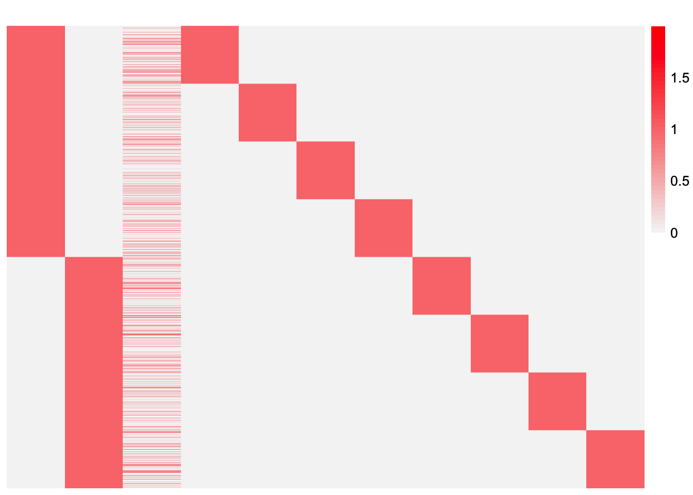
| Version | Author | Date |
|---|---|---|
| f618eb1 | Annie Xie | 2024-04-23 |
#note to self: maybe save this in file and load in
observed.vals <- data$Y %*% t(data$Y)/ncol(data$Y)GBCD Analysis
Analysis
This is the code to run the GBCD analysis.
fit.gbcd <- flash_fit_cov_ebnmf(Y = data$Y, Kmax = 16, prior = ebnm::ebnm_generalized_binary, thres = 0.9, extrapolate = FALSE)I have the results saved, so I will just load the results directly.
fit.gbcd <- readRDS(paste0("~/Documents/PhD 3/Research/EBCD/simulation_output_gbcd/iter", iter, "_gbcd.rds"))This is a plot of estimate for \(L\):
plot_heatmap(fit.gbcd$L)
| Version | Author | Date |
|---|---|---|
| f618eb1 | Annie Xie | 2024-04-23 |
Rescale GBCD loadings estimate
I’m loading in previously saved results.
load("data/iter1_gbcd_rescale.RData")This is the code to rescale the GBCD estimate. I’ve loaded in previously saved results.
fit.gbcd.rescale1 <- flash_fit_cov_ebnmf_fit_laplace(Y = data$Y, Kmax = 16, prior = ebnm::ebnm_generalized_binary, thres = 0.9, extrapolate = FALSE, maxiter = 500, verbose = 1)
fit.gbcd.rescale2 <- flash_fit_cov_ebnmf_fit_L(dat = fit.gbcd.rescale1$dat, fit.gbcd.rescale1$fit.cov, Y=data$Y, Kmax=16, prior = ebnm::ebnm_generalized_binary, thres = 0.9, extrapolate = FALSE, maxiter = 500, verbose = 1)LDF Method of Scaling:
fit.gbcd.rescale.ldf <- ldf(fit.gbcd.rescale2$fit.cov, type = 'i')
fit.gbcd.rescale.L <- fit.gbcd.rescale.ldf$L %*% diag(sqrt(fit.gbcd.rescale.ldf$D))
thres <- 0.9
k.idx <- which(fit.gbcd.rescale2$corr > thres)
fit.gbcd.rescale.L <- fit.gbcd.rescale.L[,fit.gbcd.rescale2$k.order][,k.idx]Assess Fit
This is a heatmap of the rescaled \(L\).
plot_heatmap(fit.gbcd.rescale.L)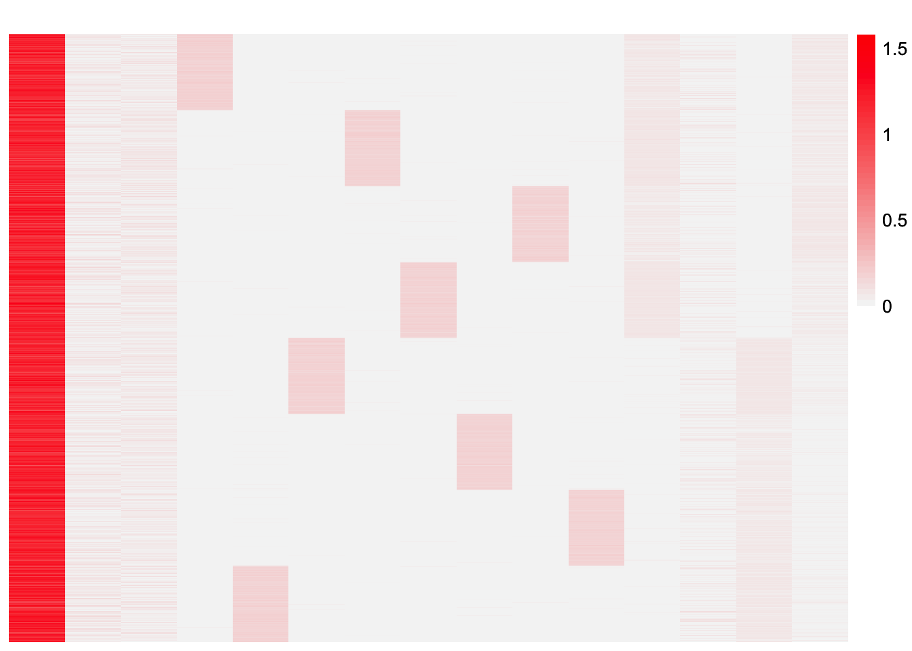
| Version | Author | Date |
|---|---|---|
| f618eb1 | Annie Xie | 2024-04-23 |
gbcd.rescaled.fitted.vals <- fit.gbcd.rescale.L %*% t(fit.gbcd.rescale.L)sum((observed.vals - gbcd.rescaled.fitted.vals)^2)[1] 6406.447This is code to plot (a sub-sampple of) fitted values vs. observed values:
set.seed(3952)
samp.vals <- sample(1:prod(dim(observed.vals)), size = 100000)ggplot(data = NULL, aes(x = c(as.matrix(observed.vals))[samp.vals], y = c(gbcd.rescaled.fitted.vals)[samp.vals])) + geom_point() + xlab('Observed Values') + ylab('Fitted Values') + geom_abline(slope = 1, intercept = 0, color = 'red')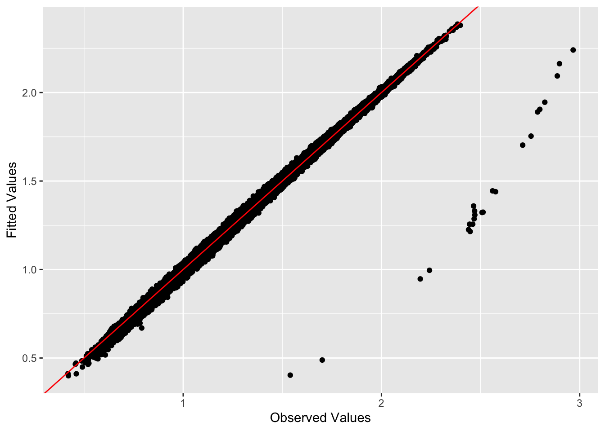
| Version | Author | Date |
|---|---|---|
| f618eb1 | Annie Xie | 2024-04-23 |
gbcd.rescaled.withdiag.fitted.vals <- fit.gbcd.rescale.L %*% t(fit.gbcd.rescale.L) + diag(rep(fit.gbcd.rescale2$s2, nrow(fit.gbcd.rescale.L)))sum((observed.vals - gbcd.rescaled.withdiag.fitted.vals)^2)[1] 2613.399ggplot(data = NULL, aes(x = c(as.matrix(observed.vals))[samp.vals], y = c(gbcd.rescaled.withdiag.fitted.vals)[samp.vals])) + geom_point() + xlab('Observed Values') + ylab('Fitted Values') + geom_abline(slope = 1, intercept = 0, color = 'red')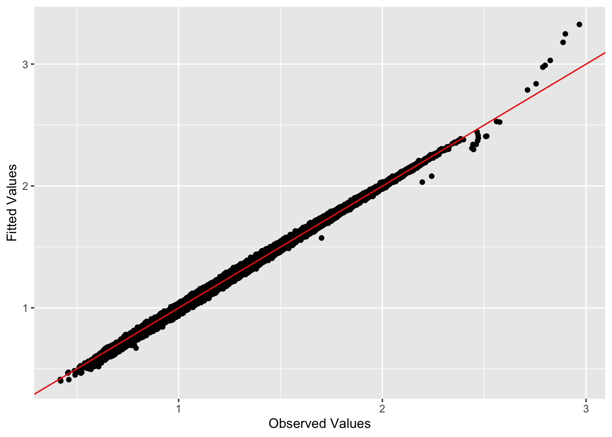
| Version | Author | Date |
|---|---|---|
| f618eb1 | Annie Xie | 2024-04-23 |
Correlation of GBCD estimate to true loadings matrix
We compute the correlation of the GBCD estimate of the loadings matrix to the true loadings matrix.
correlation_GBCD_true <- cor(fit.gbcd$L, data$L)
colnames(correlation_GBCD_true) <- c('Subtype 1 GEP', 'Subtype 2 GEP', 'Shared GEP', paste('Patient', c(1:8)))correlation_GBCD_true Subtype 1 GEP Subtype 2 GEP Shared GEP Patient 1 Patient 2
Baseline -0.0124638935 0.0124638935 0.004365361 0.013190308 -0.025840737
GEP1 -0.0177875685 0.0177875685 0.024244340 0.004692371 -0.010425927
GEP2 0.0316046292 -0.0316046292 -0.022536671 -0.021162613 0.054256957
GEP3 0.3755368158 -0.3755368158 0.031019343 0.989032842 -0.139896361
GEP4 -0.3770691205 0.3770691205 0.012481628 -0.143830400 -0.142150115
GEP5 -0.3722656782 0.3722656782 -0.007788740 -0.140391824 -0.139725011
GEP6 0.3754516633 -0.3754516633 0.004930312 -0.140533267 0.987573656
GEP7 0.3756791161 -0.3756791161 -0.015831537 -0.136669282 -0.142505121
GEP8 -0.3762679469 0.3762679469 0.018052808 -0.142873107 -0.142032700
GEP9 0.3770780395 -0.3770780395 -0.018239274 -0.138900922 -0.137385066
GEP10 -0.3761428224 0.3761428224 -0.023947121 -0.144045039 -0.140389458
GEP11 0.8253288271 -0.8253288271 0.017648501 0.251034943 0.428759717
GEP12 -0.0006749492 0.0006749492 0.967689920 0.025568509 0.006539567
GEP13 -0.7623670995 0.7623670995 0.013471905 -0.293915976 -0.284528754
GEP14 0.5250885491 -0.5250885491 0.002664344 0.255028825 0.121747565
Patient 3 Patient 4 Patient 5 Patient 6 Patient 7
Baseline -0.01384350 0.007650289 -0.0178170433 -0.0009190737 0.002397651
GEP1 -0.01921782 -0.001940898 -0.0009783164 -0.0064974082 -0.012495029
GEP2 0.01881676 -0.004129397 0.0087839718 -0.0005128460 -0.019549106
GEP3 -0.14031620 -0.141061981 -0.1411614625 -0.1419042286 -0.142727300
GEP4 -0.14178312 -0.142311294 -0.1438367750 -0.1357244191 -0.137968587
GEP5 -0.14222761 -0.140468363 0.9866146874 -0.1422276067 -0.141234615
GEP6 -0.13798121 -0.141429622 -0.1399506485 -0.1424600195 -0.143372165
GEP7 -0.13814527 0.985293111 -0.1408682551 -0.1423320895 -0.142322674
GEP8 -0.14200324 -0.141954618 -0.1373640137 0.9875385108 -0.142103779
GEP9 0.98710392 -0.140729524 -0.1432101315 -0.1423300589 -0.142250353
GEP10 -0.14213645 -0.142103547 -0.1420543229 -0.1358928935 0.987306242
GEP11 0.12975521 0.438230029 -0.3003587119 -0.3191527015 -0.312223876
GEP12 -0.02332613 -0.009802373 -0.0148087273 0.0227049305 -0.026428125
GEP13 -0.29412219 -0.280023794 0.4361394990 0.1335571933 0.244692046
GEP14 0.36278851 0.054294366 -0.1183144114 -0.2684311464 -0.220543136
Patient 8
Baseline 0.03518210
GEP1 0.04686303
GEP2 -0.03650373
GEP3 -0.14196531
GEP4 0.98760471
GEP5 -0.14033966
GEP6 -0.14184673
GEP7 -0.14245042
GEP8 -0.13920705
GEP9 -0.14229787
GEP10 -0.14068453
GEP11 -0.31604461
GEP12 0.01955235
GEP13 0.33820198
GEP14 -0.18657057Interpretation of GBCD GEPs
Based off of the loadings, GEPs 3-10 correspond to patient effects. The GBCD method fit 6 shared GEPs (including the subtype GEPs) along with a baseline factor. GEP 12 has the highest correlation with the shared GEP from the true loadings matrix with a correlation value of 0.968. GEP 11 has the highest correlation with the subtype 1 GEP (but it only has a correlation value of 0.825). GEP 13 has the highest correlation with the subtype 2 GEP (but it only has a correlation value of 0.762).
One possible explanation for one of the other shared GEPs is correlation with size factor. We try to account for size factor by scaling the counts accordingly, but sometimes we still get a factor that correlates with size factor. In general, we don’t find these factors biologically meaningful.
size_factors <- rowSums(data$Y)correlation_GBCD_size <- cor(fit.gbcd$L[,c(2:3,15)], size_factors)correlation_GBCD_size [,1]
GEP1 0.8125249
GEP2 -0.8720861
GEP14 -0.4285058GEP1 has a positive correlation with size factor with a correlation of 0.813. I would say this is a relatively high correlation. GEP2 interestingly has a negative correlation with size factor, with a correlation of -0.872. GEP14 has a moderate negative correlation with size factor, with a correlation of -0.429.
EBCD Analysis
I’m loading in previously saved results.
fit.ebcd <- readRDS(paste0("~/Documents/PhD 3/Research/EBCD/simulation_output_ebcd/iter", iter, "_ebcd.rds"))This is the code to run the EBCD analysis. I’ve already loaded in the saved results.
set.seed(295)
fit.ebcd <- ebcd(X = t(data$Y), Kmax = 15, ebnm_fn = ebnm::ebnm_generalized_binary)This is a plot of the scaled estimate of \(L\). This estimate is scaled such that the infinity norm for each column is 1, i.e. the maximum value for each column is 1.
plot_heatmap(t(t(fit.ebcd$EL)/apply(fit.ebcd$EL,2, max)))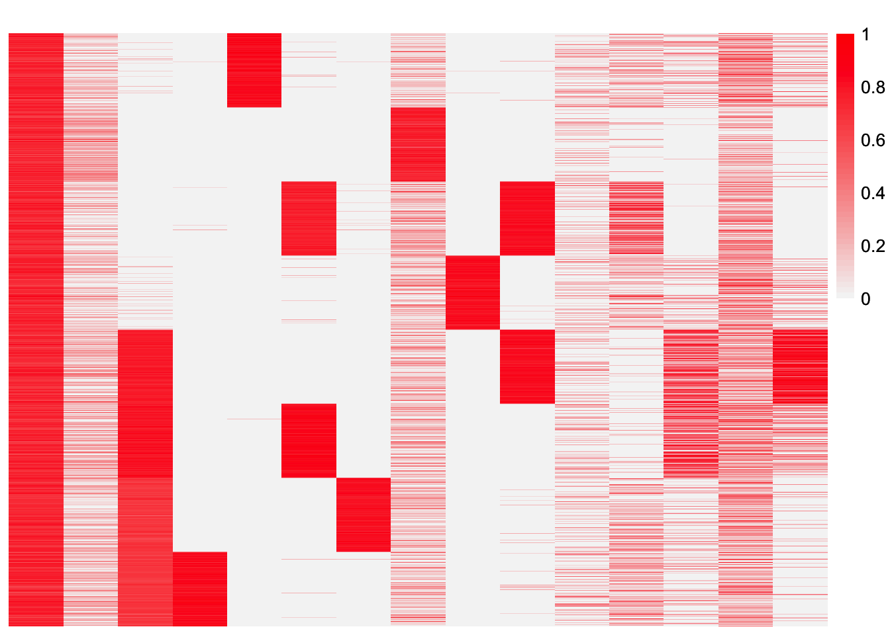
| Version | Author | Date |
|---|---|---|
| f618eb1 | Annie Xie | 2024-04-23 |
ebcd.fitted.vals <- fit.ebcd$EL %*% t(fit.ebcd$EL)sum((observed.vals - ebcd.fitted.vals)^2)[1] 6362.336This is a plot of (a subset of) the fitted values vs. observed values:
ggplot(data = NULL, aes(x = c(as.matrix(observed.vals))[samp.vals], y = c(ebcd.fitted.vals)[samp.vals])) + geom_point() + xlab('Observed Values') + ylab('Fitted Values') + geom_abline(slope = 1, intercept = 0, color = 'red')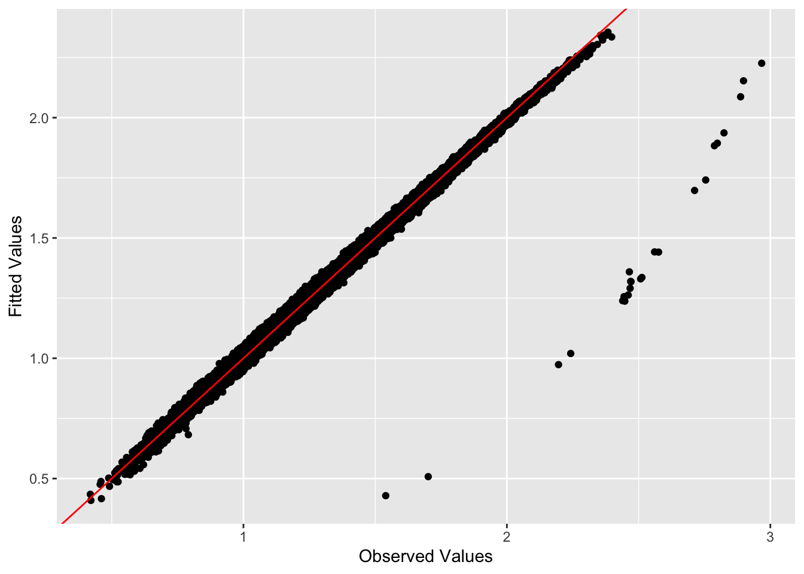
| Version | Author | Date |
|---|---|---|
| f618eb1 | Annie Xie | 2024-04-23 |
This is a plot of the diagonal entries of the fitted values vs. the diagonal entries of the observed values:
ggplot(data = NULL, aes(x = diag(as.matrix(observed.vals)), y = diag(ebcd.fitted.vals))) + geom_point() + xlab('Observed Values') + ylab('Fitted Values') + geom_abline(slope = 1, intercept = 0, color = 'red')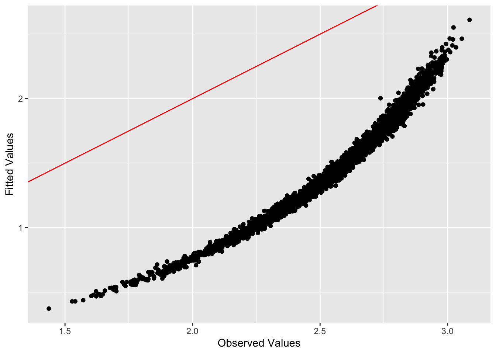
| Version | Author | Date |
|---|---|---|
| f618eb1 | Annie Xie | 2024-04-23 |
This is a plot of the progression of the objective function
ggplot(data = NULL, aes(x = c(1:length(fit.ebcd$vec.obj)), y = fit.ebcd$vec.obj)) + geom_line()
| Version | Author | Date |
|---|---|---|
| f618eb1 | Annie Xie | 2024-04-23 |
This is the number of iterations that the backfit did before the convergence criterion was satisfied:
length(fit.ebcd$vec.obj)[1] 651Correlation of EBCD estimate to true loadings matrix
We compute the correlation of the EBCD estimate of the loadings matrix to the true loadings matrix.
correlation_EBCD_true <- cor(fit.ebcd$EL, data$L)
colnames(correlation_EBCD_true) <- c('Subtype 1 GEP', 'Subtype 2 GEP', 'Shared GEP', paste('Patient', c(1:8)))correlation_EBCD_true Subtype 1 GEP Subtype 2 GEP Shared GEP Patient 1 Patient 2
[1,] 0.0088652122 -0.0088652122 0.003461209 0.01993213 -0.009037589
[2,] -0.0295082012 0.0295082012 0.040731871 -0.05797521 0.160096719
[3,] -0.9693426918 0.9693426918 -0.003053493 -0.36258387 -0.378829491
[4,] -0.3734408472 0.3734408472 0.009208791 -0.14119566 -0.142922292
[5,] 0.3755650713 -0.3755650713 0.029166405 0.99487653 -0.142358574
[6,] -0.0288325193 0.0288325193 0.002506601 -0.21025452 -0.219678087
[7,] -0.3679159355 0.3679159355 -0.024849143 -0.14228848 -0.144326338
[8,] 0.2362198799 -0.2362198799 -0.007909504 -0.12336079 0.588569155
[9,] 0.3767376592 -0.3767376592 -0.013293571 -0.13883553 -0.142397403
[10,] -0.0049779763 0.0049779763 -0.019732168 -0.21569087 -0.220757182
[11,] -0.0009916717 0.0009916717 0.947637710 0.02400038 0.000265526
[12,] 0.1561827728 -0.1561827728 0.012064616 0.01250378 -0.172615660
[13,] -0.3464166243 0.3464166243 0.004686701 -0.05751885 -0.194467618
[14,] -0.0146424146 0.0146424146 -0.023566240 0.05480017 -0.128289571
[15,] -0.3231344079 0.3231344079 -0.013802908 -0.04992972 -0.175971304
Patient 3 Patient 4 Patient 5 Patient 6 Patient 7
[1,] -0.0116952410 0.014203645 -0.028137679 -0.01321750 -0.003128166
[2,] -0.0972524089 -0.049481305 0.033829081 0.03673251 -0.029984574
[3,] -0.3788295110 -0.345265529 0.413012822 0.44302900 0.306241331
[4,] -0.1375649636 -0.142906575 -0.142922292 -0.14292229 -0.142922291
[5,] -0.1423583837 -0.142358554 -0.142358572 -0.14072740 -0.142356481
[6,] 0.5935595160 -0.207217584 -0.219678087 0.69765786 -0.219649471
[7,] -0.1252954571 -0.144326332 -0.144326338 -0.14432634 0.987350978
[8,] -0.0193099851 -0.088767486 -0.086343848 -0.07941480 -0.092637246
[9,] -0.1423898712 0.993196608 -0.142397388 -0.14238161 -0.142397402
[10,] 0.6434124151 -0.214490360 0.647829590 -0.22075718 -0.209723937
[11,] -0.0163101993 -0.009454969 -0.012370297 0.02361528 -0.024822400
[12,] 0.3640093350 0.032228698 -0.170789899 -0.16721001 0.041836343
[13,] -0.1961045807 -0.075641662 0.363042672 0.37576390 -0.110998285
[14,] 0.0004262503 0.050925901 -0.001711783 0.06752395 -0.001416490
[15,] -0.1917577649 -0.070874517 0.701558146 0.09517225 -0.152277436
Patient 8
[1,] 0.031080406
[2,] 0.004035194
[3,] 0.303225245
[4,] 0.993356367
[5,] -0.142358559
[6,] -0.214739627
[7,] -0.142461692
[8,] -0.098734998
[9,] -0.142397401
[10,] -0.209822478
[11,] 0.015076679
[12,] 0.060037405
[13,] -0.104075583
[14,] -0.042258423
[15,] -0.155919658Interpretation of EBCD GEPs
Based off of the loadings, GEPs 2-3, 5, and 9 correspond to patient effects. GEP 4 and GEP 10 both correspond to two patient effects that the output has coupled together. In addition, GEP 8 shows high loading value for patient 2 effects, but it also has loading values in other patients, so it is not solely a patient effect. The EBCD method fit 8 shared GEPs (including the subtype GEP) along with a baseline factor. GEP10 has the highest correlation with the shared GEP from the true loadings matrix. GEP2 has the highest correlation with the subtype 2 GEP from the true loadings matrix. No GEPs have a very strong positive correlation with the subtype 1 GEP from the true loadings matrix; however, GEP2 has a high negative correlation with the subtype 2 GEP.
One possible explanation for one of the other shared GEPs is correlation with size factor. We try to account for size factor by scaling the counts accordingly, but sometimes we still get a factor that correlates with size factor. In general, we don’t find these factors biologically meaningful.
size_factors <- rowSums(data$Y)correlation_EBCD_size <- cor(fit.ebcd$EL[,c(2,11:15)], size_factors)correlation_EBCD_size [,1]
[1,] 0.77946786
[2,] 0.07466812
[3,] 0.48847387
[4,] 0.35776674
[5,] -0.78244335
[6,] -0.11869433GEP1 has a positive correlation with size factor with a correlation of 0.779. I would say this is a relatively high negative correlation. GEP13 has a negative correlation with size factor with a correlation of -0.782. I would say GEPs 10 and 14 don’t have a large correlation with size factor. GEPs 11 and 12 have more moderate correlations with size factor, but not as large as GEPs 1 and 13. Another explanation for the additional shared GEPs is they are artifacts from the Poisson model (with a shifted-log-transformation step to try to make the data approximately normal) from which the data is generated. This model does not exactly match the model that EBCD or GBCD is fitting. It might be worth it to run a simulation that uses data simulated from the EBCD model.
EBCD Analysis with true number of factors
In the previous EBCD analysis, I set the maximum number of factors to 15 because that is the number of factors that GBCD fit. However, I wanted to try running EBCD with the true number of factors, 11, (plus a baseline factor) and see what the results look like. I am not convinced that using the correct number of factors will lead to an output that is more similar to the true loadings matrix (given that my previous analysis used a larger number of factors).
I’m loading in previously saved results.
fit.ebcd_K12 <- readRDS(paste0("~/Documents/PhD 3/Research/EBCD/simulation_output_ebcd/iter", iter, "_ebcd_K12.rds"))This is the code to run the EBCD analysis. I’ve already loaded in the saved results.
set.seed(295)
fit.ebcd_K12 <- ebcd(X = t(data$Y), Kmax = 12, ebnm_fn = ebnm::ebnm_generalized_binary)This is a plot of the scaled estimate of \(L\). This estimate is scaled such that the infinity norm for each column is 1, i.e. the maximum value for each column is 1.
plot_heatmap(t(t(fit.ebcd_K12$EL)/apply(fit.ebcd_K12$EL,2, max)))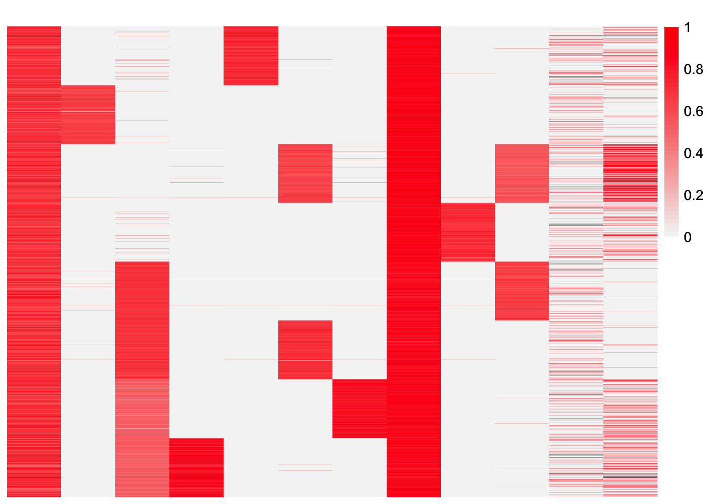
| Version | Author | Date |
|---|---|---|
| f618eb1 | Annie Xie | 2024-04-23 |
ebcd_K12.fitted.vals <- fit.ebcd_K12$EL %*% t(fit.ebcd_K12$EL)sum((observed.vals - ebcd_K12.fitted.vals)^2)[1] 6090.539This is a plot of (a subset of) the fitted values vs. observed values:
ggplot(data = NULL, aes(x = c(as.matrix(observed.vals))[samp.vals], y = c(ebcd_K12.fitted.vals)[samp.vals])) + geom_point() + xlab('Observed Values') + ylab('Fitted Values') + geom_abline(slope = 1, intercept = 0, color = 'red')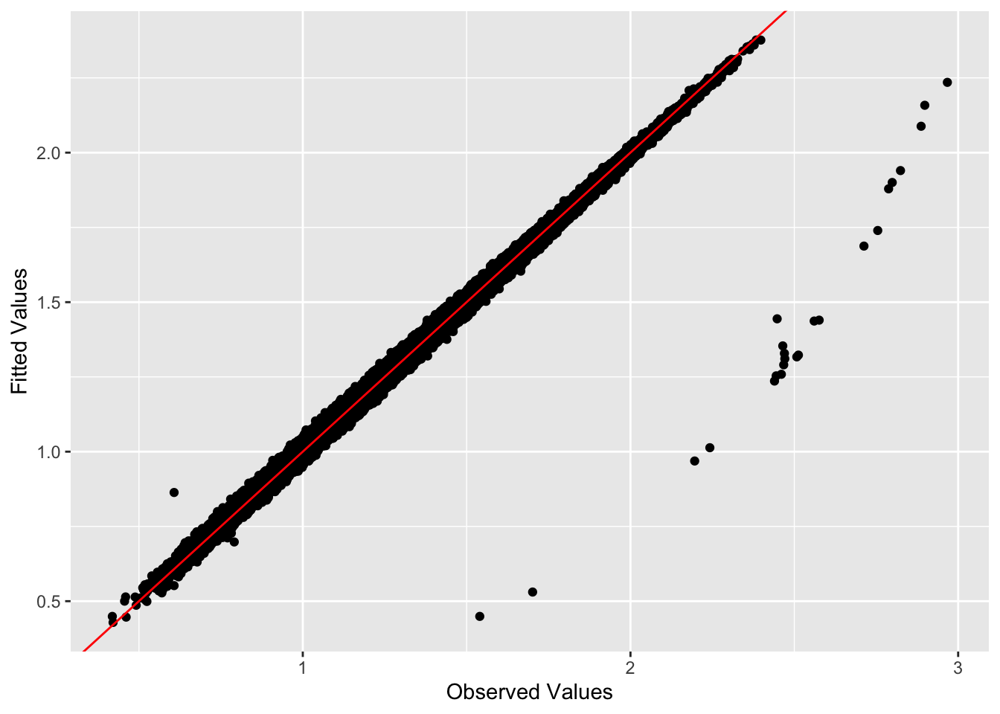
| Version | Author | Date |
|---|---|---|
| f618eb1 | Annie Xie | 2024-04-23 |
This is a plot of the diagonal entries of the fitted values vs. the diagonal entries of the observed values:
ggplot(data = NULL, aes(x = diag(as.matrix(observed.vals)), y = diag(ebcd_K12.fitted.vals))) + geom_point() + xlab('Observed Values') + ylab('Fitted Values') + geom_abline(slope = 1, intercept = 0, color = 'red')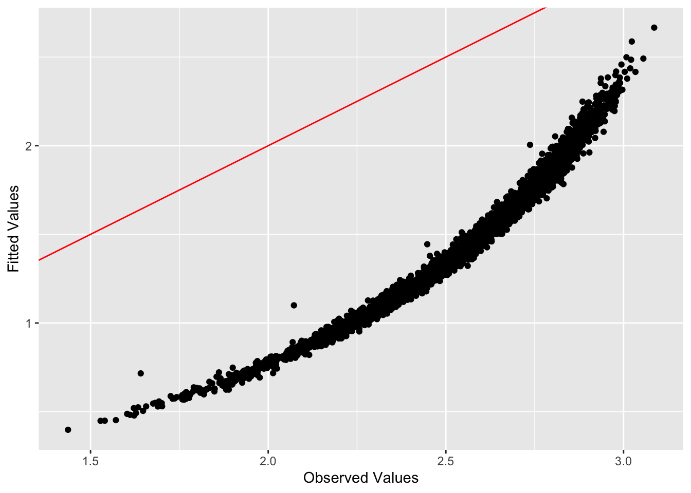
| Version | Author | Date |
|---|---|---|
| f618eb1 | Annie Xie | 2024-04-23 |
This is a plot of the progression of the objective function
ggplot(data = NULL, aes(x = c(1:length(fit.ebcd_K12$vec.obj)), y = fit.ebcd_K12$vec.obj)) + geom_line()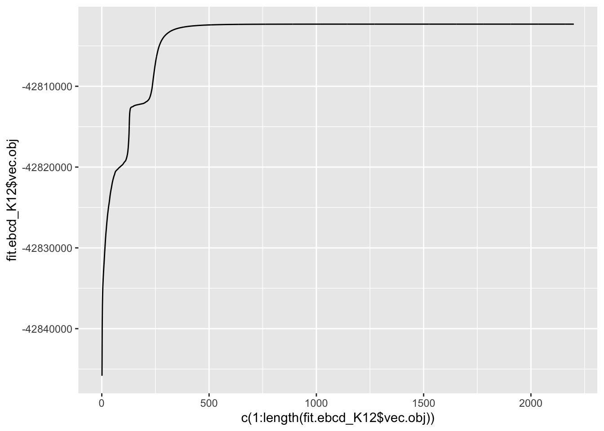
| Version | Author | Date |
|---|---|---|
| f618eb1 | Annie Xie | 2024-04-23 |
This is the number of iterations that the backfit did before the convergence criterion was satisfied:
length(fit.ebcd_K12$vec.obj)[1] 2200Correlation of EBCD estimate to true loadings matrix
We compute the correlation of the EBCD estimate of the loadings matrix to the true loadings matrix.
correlation_EBCD_K12_true <- cor(fit.ebcd_K12$EL, data$L)
colnames(correlation_EBCD_K12_true) <- c('Subtype 1 GEP', 'Subtype 2 GEP', 'Shared GEP', paste('Patient', c(1:8)))correlation_EBCD_K12_true Subtype 1 GEP Subtype 2 GEP Shared GEP Patient 1 Patient 2
[1,] -0.0098184709 0.0098184709 9.884286e-03 0.01739304 -0.02033615
[2,] 0.3658094903 -0.3658094903 3.751741e-03 -0.14362878 0.98042519
[3,] -0.9581350016 0.9581350016 -2.640938e-03 -0.35235403 -0.36961091
[4,] -0.3725125054 0.3725125054 7.681368e-03 -0.14349718 -0.14349718
[5,] 0.3713331435 -0.3713331435 2.978077e-02 0.98656595 -0.14287454
[6,] -0.0352876863 0.0352876863 -7.826409e-05 -0.21418434 -0.21710864
[7,] -0.3705233829 0.3705233829 -2.429379e-02 -0.14423997 -0.14423997
[8,] 0.2663316362 -0.2663316362 -9.589054e-02 0.04750451 0.10547579
[9,] 0.3713763626 -0.3713763626 -1.386860e-02 -0.14112321 -0.14293001
[10,] -0.0436472636 0.0436472636 -2.207087e-02 -0.21398176 -0.21706670
[11,] 0.0005515318 -0.0005515318 9.488170e-01 0.02499595 0.00235528
[12,] 0.1724443943 -0.1724443943 -1.142236e-02 -0.02945554 -0.16251126
Patient 3 Patient 4 Patient 5 Patient 6 Patient 7 Patient 8
[1,] -0.02316299 0.01126196 -0.01359969 -0.00204389 -0.002494132 0.03298184
[2,] -0.14011625 -0.14362819 -0.12677614 -0.13901826 -0.143628780 -0.14362878
[3,] -0.37448012 -0.35211890 0.47143281 0.46382463 0.251537054 0.26176946
[4,] -0.13269444 -0.14349718 -0.13883965 -0.14349718 -0.143497177 0.98901997
[5,] -0.13941392 -0.14287454 -0.13509034 -0.14056352 -0.142874542 -0.14287454
[6,] 0.59506385 -0.21712084 -0.21192773 0.69642237 -0.217120056 -0.21402462
[7,] -0.12745879 -0.14423997 -0.13907717 -0.14239270 0.985888540 -0.14423997
[8,] 0.18209949 0.06757579 -0.20051891 -0.14045464 -0.007832061 -0.05384998
[9,] -0.13919363 0.98471513 -0.13540146 -0.14020681 -0.142930010 -0.14293001
[10,] 0.58212700 -0.21706700 0.71124840 -0.21706731 -0.214211631 -0.21398101
[11,] -0.01635203 -0.01016537 -0.01328954 0.02296653 -0.025279312 0.01476848
[12,] 0.45152233 0.00115589 -0.19375268 -0.19158583 0.059859495 0.06476760Interpretation of EBCD GEPs
Based off of the loadings, GEPs 1,3,4,6, and 8 correspond to patient effects. GEP 5 and GEP 9 both correspond to two patient effects that the output has coupled together. In addition, GEP 11 shows somewhat high loading values for patient 3 effects, but it also has loading values in other patients, so it is not solely a patient effect. The EBCD method fit 4 shared GEPs (including the subtype GEP) along with a baseline factor. GEP10 has the highest correlation with the shared GEP from the true loadings matrix. GEP2 has the highest correlation with the subtype 2 GEP from the true loadings matrix. No GEPs have a very strong positive correlation with the subtype 1 GEP from the true loadings matrix; however, GEP2 has a high negative correlation with the subtype 2 GEP.
One possible explanation for one of the other shared GEPs is correlation with size factor. We try to account for size factor by scaling the counts accordingly, but sometimes we still get a factor that correlates with size factor. In general, we don’t find these factors biologically meaningful.
size_factors <- rowSums(data$Y)correlation_EBCD_K12_size <- cor(fit.ebcd$EL[,c(8,12)], size_factors)correlation_EBCD_K12_size [,1]
[1,] -0.6296063
[2,] 0.4884739Both GEP 7 and 11 have moderate magnitudes of correlation with size factor, but, to me, the values are not high enough to suggest that these GEPs arise from size factor variation.
Correlation between GBCD and EBCD loadings estimates
We analyze the concordance between the loadings matrices from GBCD and EBCD. We compute the correlations between the columns of the GBCD loadings estimate and the columns of the EBCD loadings estimate.
correlation_L_estimates <- cor(fit.gbcd$L, fit.ebcd$EL)For each column of the EBCD loadings estimate, we identify the corresponding column of the GBCD loadings estimate that is most highly correlated.
max_corr <- apply(correlation_L_estimates, 2, FUN = max)
return_gep <- function(x){
gep_index <- which.max(x)
if (gep_index == 1){
gep_name <- 'Baseline'
}
else{
gep_name <- paste('GEP',(gep_index - 1))
}
return(gep_name)
}
max_gbcd_gep <- apply(correlation_L_estimates, 2, FUN = return_gep)gep_colnames <- c('Baseline', paste('GEP', c(1:(ncol(fit.ebcd$EL) - 1))))
correlation_info <- data.frame(max_gbcd_gep, max_corr, row.names = gep_colnames)
print(correlation_info[order(correlation_info$max_corr, decreasing = TRUE), ]) max_gbcd_gep max_corr
Baseline Baseline 0.9995392
GEP 4 GEP 3 0.9955265
GEP 8 GEP 7 0.9938514
GEP 3 GEP 4 0.9932707
GEP 6 GEP 10 0.9879623
GEP 10 GEP 12 0.9753023
GEP 1 GEP 1 0.8690042
GEP 13 GEP 2 0.7909761
GEP 2 GEP 13 0.7725065
GEP 14 GEP 5 0.7125733
GEP 5 GEP 8 0.6965679
GEP 7 GEP 2 0.6817304
GEP 9 GEP 5 0.6462756
GEP 11 GEP 1 0.5288756
GEP 12 GEP 8 0.4085584Comparing GBCD and EBCD: Observations
The GBCD and EBCD outputs have some qualitative differences that I think are unexpected. First, GBCD separates all of the patient effects into separate GEPs, which is what we expect. We expect EBCD to behave in a similar way; however (at least for the random seed I used), the EBCD result couples some of the patient effects together. This is not necessarily a bad thing; it just changes the interpretation of the factors. In addition, GBCD finds two GEPs related to subtypes – one for subtype 1 and another for subtype 2. On the other hand, EBCD only finds one GEP related to subtype. More specifically, it finds one for subtype 2. I would say that ideally we would want to find a GEP for each subtype. This difference could potentially be due to EBCD converging to a local optimum. Matrix factorization problems also can have non-identifiability issues, so it could also be related to that.
Experiment: Use GBCD output to initialize EBCD
Hypothesis
I hypothesize that the EBCD output with the GBCD initialization will be closer qualitatively to the GBCD output than the EBCD with greedy initialization output. For example, all of the patient effects will be represented in separate GEPs. In addition, there will a GEP for each subtype. I think that the initialization having these qualities will create an inductive bias that induces these qualities in the EBCD output.
Analysis
This is the code to run the analysis. I will load in previously saved results.
Z.init <- PolarU(fit.ebcd$A%*%fit.gbcd.rescale.L)
fitted.Y <- Z.init%*%t(fit.gbcd.rescale.L)
tau.est <- prod(dim(fit.ebcd$A)) / sum((fit.ebcd$A - fitted.Y)^2)
ebcd_obj_init_rescaled <- list(
A = fit.ebcd$A, N = fit.ebcd$N, nrowA = fit.ebcd$nrowA,
tau = tau.est, Z = Z.init, EL = fit.gbcd.rescale.L, ebnm_fn = ebnm::ebnm_generalized_binary
)fit.ebcd.gbcd.init_rescaled <- ebcd_backfit(ebcd_obj_init_rescaled, maxiter = 2500)load('~/Documents/PhD 3/Research/EBCD/simulation_output_ebcd/iter1_ebcd_gbcd_init.RData')#plot initialization
plot_heatmap(fit.gbcd.rescale.L)
| Version | Author | Date |
|---|---|---|
| f618eb1 | Annie Xie | 2024-04-23 |
plot_heatmap(t(t(fit.gbcd.rescale.L)/apply(fit.gbcd.rescale.L,2, max)))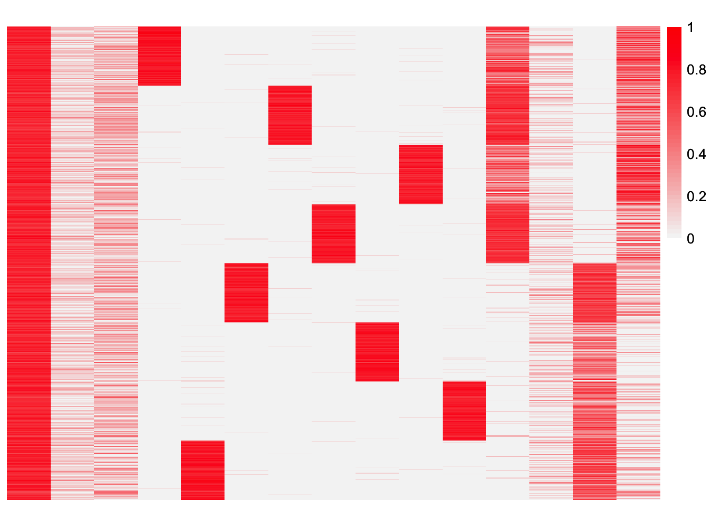
| Version | Author | Date |
|---|---|---|
| f618eb1 | Annie Xie | 2024-04-23 |
plot_heatmap(t(t(fit.ebcd.gbcd.init_rescaled$EL)/apply(fit.ebcd.gbcd.init_rescaled$EL,2, max)))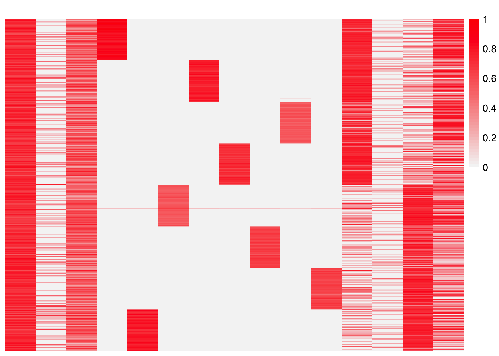
| Version | Author | Date |
|---|---|---|
| f618eb1 | Annie Xie | 2024-04-23 |
This is the number of backfit iterations that were needed to reach convergence
print(length(fit.ebcd.gbcd.init_rescaled$vec.obj))[1] 437plot_heatmap(ebcd_backfit(ebcd_obj_init_rescaled, maxiter = 5)$EL)ebcd.gbcd.rescaled.init.fitted.vals <- fit.ebcd.gbcd.init_rescaled$EL %*% t(fit.ebcd.gbcd.init_rescaled$EL)sum((observed.vals - ebcd.gbcd.rescaled.init.fitted.vals)^2)[1] 6118.539ggplot(data = NULL, aes(x = c(as.matrix(observed.vals))[samp.vals], y = c(ebcd.gbcd.rescaled.init.fitted.vals)[samp.vals])) + geom_point() + xlab('Observed Values') + ylab('Fitted Values') + geom_abline(slope = 1, intercept = 0, color = 'red')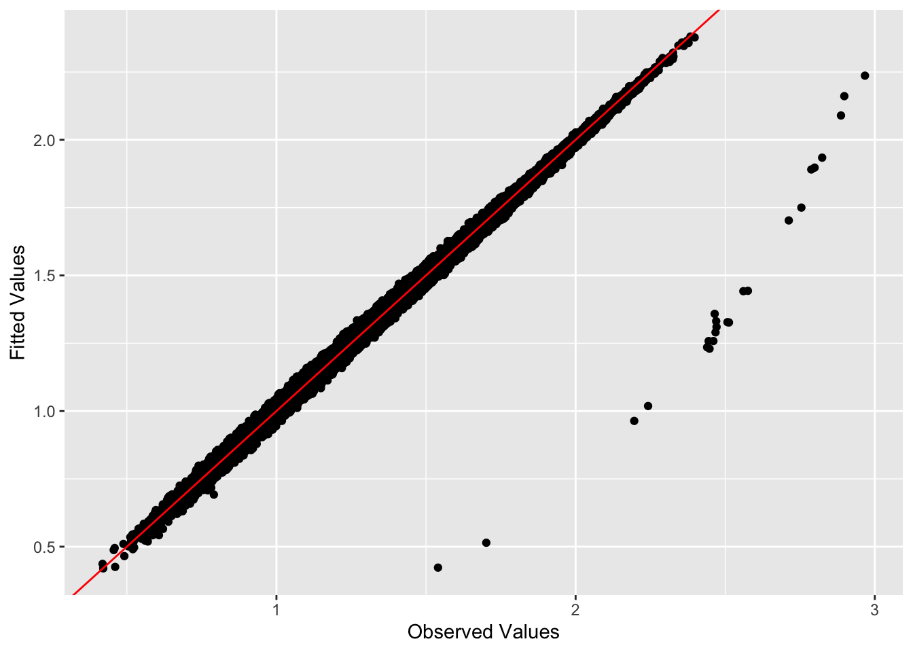
| Version | Author | Date |
|---|---|---|
| f618eb1 | Annie Xie | 2024-04-23 |
ggplot(data = NULL, aes(x = c(2:length(fit.ebcd.gbcd.init_rescaled$vec.obj)), y = fit.ebcd.gbcd.init_rescaled$vec.obj[-1])) + geom_line()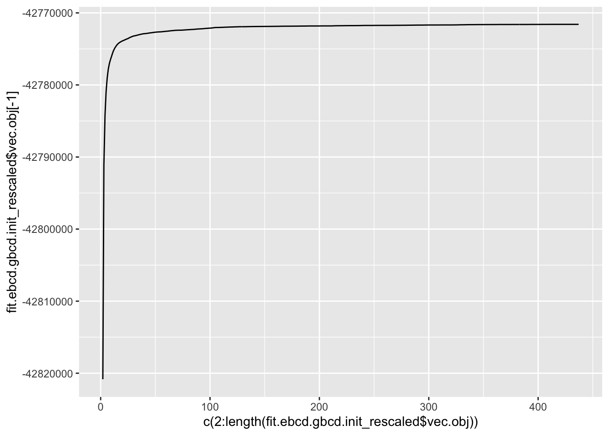
| Version | Author | Date |
|---|---|---|
| f618eb1 | Annie Xie | 2024-04-23 |
Observations
The output from the EBCD backfit with the GBCD output as initialization has some qualitative differences from the greedy-initialization EBCD output. One difference is the patient effects are all separate; none of them are coupled like in the regular EBCD output. Something that was surprising to me is the EBCD backfit made the subtype GEPs more dense. Therefore, while there are still high loading values on the respective subtypes, it is harder to interpret the GEPs as subtype-specific. I wonder if EBCD is behaving unexpectedly due to the model misspecification – the data was generated under a Poisson model and then transformed to be approximately normal. Perhaps EBCD would behave as expected if normal noise was used in the data generation – that is something to test.
sessionInfo()R version 4.3.2 (2023-10-31)
Platform: aarch64-apple-darwin20 (64-bit)
Running under: macOS Ventura 13.6
Matrix products: default
BLAS: /Library/Frameworks/R.framework/Versions/4.3-arm64/Resources/lib/libRblas.0.dylib
LAPACK: /Library/Frameworks/R.framework/Versions/4.3-arm64/Resources/lib/libRlapack.dylib; LAPACK version 3.11.0
locale:
[1] en_US.UTF-8/en_US.UTF-8/en_US.UTF-8/C/en_US.UTF-8/en_US.UTF-8
time zone: America/Chicago
tzcode source: internal
attached base packages:
[1] stats graphics grDevices utils datasets methods base
other attached packages:
[1] fastTopics_0.6-142 patchwork_1.2.0 reshape2_1.4.4 irlba_2.3.5.1
[5] ashr_2.2-63 flashier_1.0.7 magrittr_2.0.3 ebnm_1.1-2
[9] Matrix_1.6-5 gridExtra_2.3 pheatmap_1.0.12 ggrepel_0.9.5
[13] RColorBrewer_1.1-3 cowplot_1.1.3 ggplot2_3.5.0 workflowr_1.7.1
loaded via a namespace (and not attached):
[1] pbapply_1.7-2 rlang_1.1.3 git2r_0.33.0 horseshoe_0.2.0
[5] compiler_4.3.2 getPass_0.2-4 callr_3.7.6 vctrs_0.6.5
[9] quantreg_5.97 quadprog_1.5-8 stringr_1.5.1 pkgconfig_2.0.3
[13] crayon_1.5.2 fastmap_1.1.1 mcmc_0.9-8 labeling_0.4.3
[17] utf8_1.2.4 promises_1.2.1 rmarkdown_2.26 ps_1.7.6
[21] MatrixModels_0.5-3 purrr_1.0.2 xfun_0.43 cachem_1.0.8
[25] trust_0.1-8 jsonlite_1.8.8 progress_1.2.3 highr_0.10
[29] later_1.3.2 parallel_4.3.2 prettyunits_1.2.0 R6_2.5.1
[33] bslib_0.7.0 stringi_1.8.3 SQUAREM_2021.1 jquerylib_0.1.4
[37] Rcpp_1.0.12 knitr_1.45 httpuv_1.6.15 splines_4.3.2
[41] tidyselect_1.2.1 rstudioapi_0.16.0 yaml_2.3.8 processx_3.8.4
[45] lattice_0.22-6 tibble_3.2.1 plyr_1.8.9 withr_3.0.0
[49] coda_0.19-4.1 evaluate_0.23 Rtsne_0.17 survival_3.5-8
[53] RcppParallel_5.1.7 pillar_1.9.0 whisker_0.4.1 plotly_4.10.4
[57] softImpute_1.4-1 generics_0.1.3 rprojroot_2.0.4 invgamma_1.1
[61] truncnorm_1.0-9 hms_1.1.3 munsell_0.5.1 scales_1.3.0
[65] glue_1.7.0 lazyeval_0.2.2 tools_4.3.2 data.table_1.15.4
[69] SparseM_1.81 fs_1.6.3 grid_4.3.2 tidyr_1.3.1
[73] MCMCpack_1.7-0 colorspace_2.1-0 deconvolveR_1.2-1 cli_3.6.2
[77] fansi_1.0.6 mixsqp_0.3-54 viridisLite_0.4.2 dplyr_1.1.4
[81] uwot_0.1.16 gtable_0.3.4 sass_0.4.9 digest_0.6.35
[85] farver_2.1.1 htmlwidgets_1.6.4 htmltools_0.5.8 lifecycle_1.0.4
[89] httr_1.4.7 MASS_7.3-60.0.1